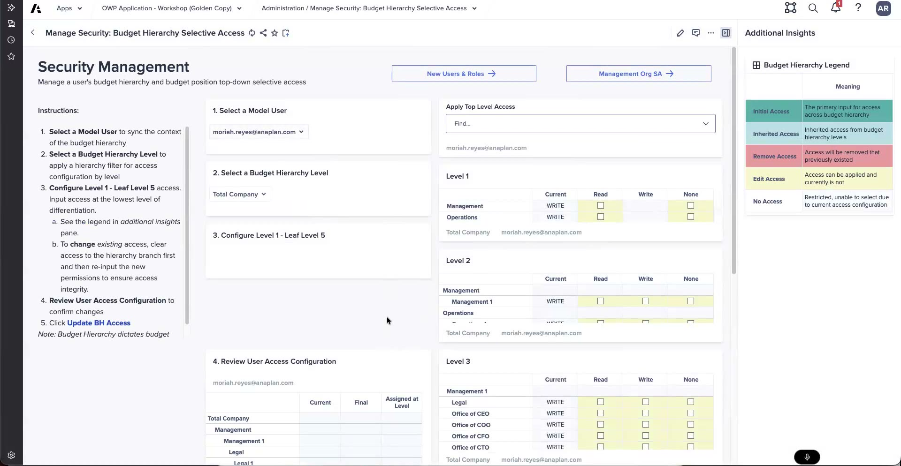

Selective Access
Flat lists that cascade to orgs and positions
Selective access is what decides which slice of the organization a user actually sees and can work on. In OWP 2.1 it is managed from a dedicated hub in the UX, and its defining trick is the cascade: you grant access at one point in a flat list and it flows down to every org and position underneath. For a large customer that cascade is the whole point.
The security management hub
Selective access is managed from a security management hub in the UX (2.1). You start by selecting a user — the demo used examples like Alex, Mariah, and Anna — and then grant them access from there.

Manage Security: Budget Hierarchy Selective Access — access cascading across hierarchy levels.
Grant write access to an org — and watch it cascade
With a user selected, you grant them write access to an org — for example "global sales." Even though the management-org list is kept flat, the grant does not stop at that one org. It automatically cascades:
- Down to all the underlying management orgs beneath the one you picked.
- Out to all the positions aligned to those orgs.
The same works from the budget-hierarchy (BH) side. Grant access against everything under "Operations," and it cascades to all the cost centers underneath plus the budget positions there.
The list you grant against is flat, but 2.1 rebuilds the hierarchy in the back end and cascades your grant through it. You set access at one node and the app fills in everything below — no clicking through each child org.
Why the cascade matters
Doing this by hand would be a "nightmare" for a 40–50k-person org. Assigning each user to every org and position individually simply does not scale. The cascade is what makes selective access workable at enterprise size — one grant, entire branch covered.
Selective access governs everything a user sees
This is not just about edit rights. Selective access governs everything a user sees — the drop-downs available to them, the positions in their views, and the targets they can pick when transferring workers or positions. Get selective access right and the rest of the experience narrows to the right scope on its own.
Managing users through the UX
The hub also manages users after they are added. All from the UX, you can:
- Change a user's model role.
- Review and update their access.
Every change is made in the UX and writes back to the model immediately — no separate admin step in the modeling environment.
Copying access between users
There is no dedicated "copy from user to user" button, but you can still copy access without rebuilding it. Copy and paste the access rows onto another user and push them to the models. It works across all models.
[PENDING SME input] On ALM and upgrades, an upgrade "shouldn't" overwrite selective-access changes — builders don't modify selective access, so only a change on Anaplan's end would overwrite it. The precise nuance about where security is implemented (dev vs. UAT, ALM to UAT) was logged as an open question to the internal product framework team and was not resolved on the recordings.
Job levels are foundational
One structural boundary to know before you configure access: you cannot create new job levels in OWP. The job-level framework is foundational. Job levels are created in Workday / HCM and brought into OWP — not built inside the app. Plan for that when a customer expects to define new levels during the OWP project.